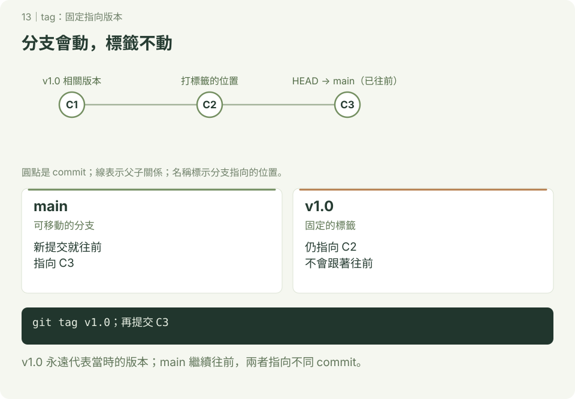

tag：替版本加上固定名稱
本章附 SVG 圖解；可先讀 互動版使用說明，再用瀏覽器開啟 docs/index.html#tag/1，按下一步觀察變化。GitHub 的 README 顯示靜態圖，下載教材後即可離線操作互動版。
分支會隨提交移動；tag 通常固定指向一個版本，適合標記交作業或發布的版本。tag 不會自動建立新的 commit，也不代表程式已完成測試。

1. 照做：加上兩個標籤
已設定提交身分，在終端機或 Git Bash 的新練習位置開始，tag-demo 尚未存在。
bash
mkdir tag-demo
cd tag-demo
git init -b main
printf 'Release 1\n' > version.txt
git add version.txt
git commit -m "完成第一版"
git tag -a v1.0 -m "課堂第一版"
printf 'Release 2\n' > version.txt
git add version.txt
git commit -m "完成第二版"
git tag v2.0
git tag --list
git log --oneline --decorate
git show v1.0
git show v1.0:version.txt預期 main 與 v2.0 在第二筆，v1.0 仍在第一筆，最後顯示 Release 1。
| 類型 | 建立方式 | 記錄 |
|---|---|---|
| annotated tag | git tag -a 名稱 -m "說明" | 另有標記者、日期、訊息等資訊 |
| lightweight tag | git tag 名稱 | 直接指向提交物件，不另建標籤物件 |
需要正式版本資訊時可用 annotated tag；本章不是簽章或自動發布教學。
2. 查看標籤版本
bash
git switch --detach v1.0
cat version.txt
git switch main預期先看到 Release 1，再回 main。detached HEAD 的新提交要用分支保留，詳見 查看過去版本。
3. 分享到遠端（查詢用）
在已設定 origin 且有權限的專案中，git push origin v1.0 上傳指定標籤；一般 git push 不代表全部 tag 都已上傳。git push origin --tags 會上傳所有本地標籤，先確認每一個都適合分享。
本地刪除用 git tag -d 名稱，不會自動刪遠端；遠端刪除用 git push origin --delete tag 名稱。共享標籤可能被別人使用，不能隨意刪除或強制移到另一個版本；修正發布通常建立新名稱。
4. 自己做
新增第三版並建立 annotated tag v3.0。完成標準：main 在第三版，v1.0 仍顯示 Release 1，能解釋分支與 tag 的差別。
參考：git tag 官方文件。